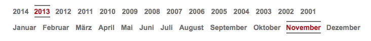
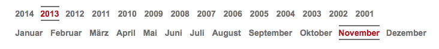

[Colja Carls]
Es soll immer nur maximal ein Eintrag des Akkordeons geöffnet sein. Das Öffnen eines neuen Eintrags schliesst also den bereits geöffneten. Als Grundlage hierfür wird jQuery genutzt. Ist dies geschafft, sollte das Akkordeon mit den passenden WAI-ARIA-Attributen versehen werden. Damit wird die Bedienbarkeit auch für Screenreader gesichert. Hierzu gibt es ein paar hilfreiche Links:
- ARIA-Cheatsheet
- Einführung in WAI-ARIA von Jan-Eric Hellbusch
- dieses Beispiel sollte als Blaupause genügen
- gutes jQuery-Plugin
- Artikel über die Nutzung des besagten jQuery-Plugins
Wenn genügend Zeit ist, sollte nicht einfach das fertige jQuery-Plugin genutzt und gestylt werden. Stattdessen kann das Plugin als Anschauungsmaterial für die richtige Implementierung der Technik dienen.
Hinweis: Der Strich unter dem dritten Satz ist ein Überbleibsel des Layouts. Dort wurde mittels eines Browserscreenshots demonstriert, wieviel Inhalt ohne zu Scrollen initial zu sehen ist.


 
